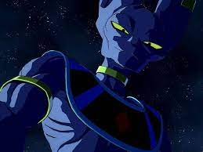
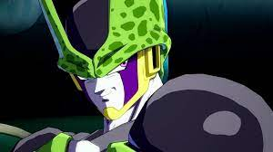
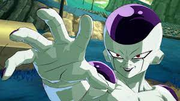
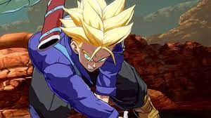

Algunos Personajes icónicos Z: Historia y habilidades en el juego
- Goku Super Saiyajin:
- Vegeta Super Saiyajin
- Gohan Adolescente
- Piccolo
- A 17
- Majin buu
- Bills 
- Cell 
- Frezzer 
- Trunks 

Goku es el prtagonista de la serie y el juego, él es muy fuerte con sus transformaciones y le encanta luchar por diversión salvar a la tierra es un plus ya que él no se considera un héroe. En el juego es capaz de lanzar increibles kamehamehas directos, luego de teletransportarse e incluso uno inmenso luego de transformarse en super saiyajin 3.

Vegeta es el eterno rival de goku luego de la saga de los saiyans y que decidiera quedarse en la tierra con el fin de un dia derrotar a Kakaroto (Goku). Es un prodigio en la serie y en el juego es capaz de lanzar ráfagas de ki devastadores, tiene el cañon Galick y el destello final capaz de púlverizar rocas inmensas.

Gohan (Adolescente) es el hijo mayor de Goku quien paso de ser un asustadizo a incluso superar a todos en la saga de Cell incluso al mismo Goku. Tiene un potencial inmenso incluso en el juego sus golpes son bastante bueno en especial los ligeros, capaz de lanzar enormes kamehamehas también y bolas de ki que explotan.

Piccolo es el maestro y niñera por excelencia de Gohan en su niñez, es tambien un excelente estratega y un oponente dificil de derrotar si te descuidas. Incluso en el juego te puede sorprender con sus Granadas que te coloca alrededor, ademas es capaz de soltar muchisimo ki acumulado en ráfaga, estira sus extremidades y se puede regenerar.

Androide 17 actualmente esta al nivel de Goku fase Dios (blue) se ha dedicado a cuidar de su familia y una isla llena de animales donde van cazadores como Guardabosques. Posee barreras difíciles de romper, capaz de absorver ki y al ser un androide no solo es extremadamente fuerte si no que es capaz de resistir muchísimo.

Majin buu es llamado un monstruo pero es muy tranquilo aun que en la saga de Majin Buu este causó muchísimos estragos y tuvo que ser detenido por no saber controlarse. Es capaz de convertir gente en un caramelo para comérselo y absorverlo, de estallar soltando mucho ki, es muy juguetón y agil a pesar de su tamaño y está loco eso lo hace muy peligroso.
Bills tiene miedo del llamado super saiyajin dios asi que va en su búsqueda y lo encuentra en la tierra cuando goku logra transformarse. En el juego es capaz de hacerte volar con un dedo no por nada Bills es el dios de la destrucción del universo. Lanzar bolas de ki inmensas y hacerlas explotar en tu cara, es alguien verdaderamente intimidante.
Cell es el villano de la saga de Cell un Androide creado para ser perfecto, la mejor creacion en el universo ni si quiera todos juntos pudieron vencerlo hasta que gohan desató su poder. Su solar kamehameha es formidable en el juego al igual que su barrera y movimientos tan fluidos y "perfectos".
Freezer es el más rastrero y despiadados de todos. Nunca se cansa de perseguir a Goku y su único deseo, a parte de medir unos centímetros mas, es derrotar a Goku quien en el planeta Namek lo derrotó. Es capaz de concentrar tanta energía en un punto que asi destruye planetas enteras sin dejar vida y su telequinesis es mortal.
Trunks es el hijo de Vegeta que aparece por primera vez en la saga de los androides para avisar lo que pasaba en el futuro y realmente es otro prodigio aun que en su tiempo no fue capaz de vencer a los androides. Su ataque incinerador es bestial al igual o más que la cúpula de calor que es capaz de crear.